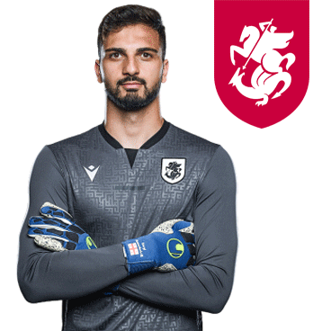
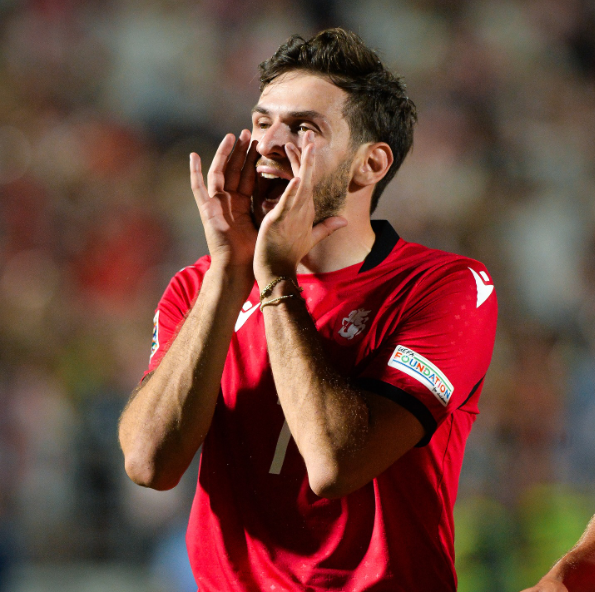
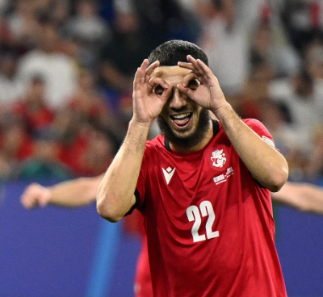

Mamardashvili

Kavaratskhelia

Mikautadze
Davitashvili
The Georgian national football team represents Georgia in international football tournaments and matches. The team is controlled and managed by the Georgian Football Federation, which has been a member of FIFA and UEFA since 1992. It hosts its home matches at the Boris Paichadze National Stadium in Tbilisi. The Georgian national team's best results include third places in the qualifying stages of the 1996 European Championship and the 2002 World Cup. It also finished first in Group D of the 2018–19 UEFA Nations League and first in Group C of the 2022–23 UEFA Nations League, which earned the team a place in the play-offs for UEFA Euro 2020 and Euro 2024. As of 4 April 2024, the Georgian national team is ranked 75th in the FIFA rankings.